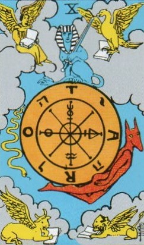
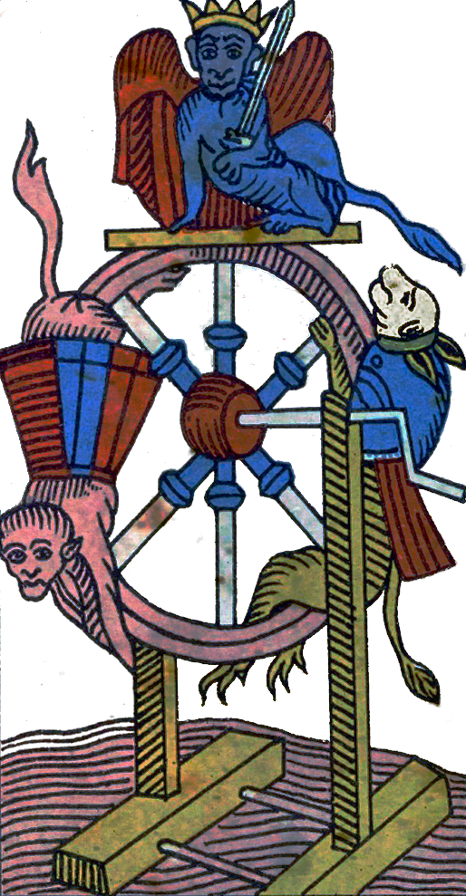
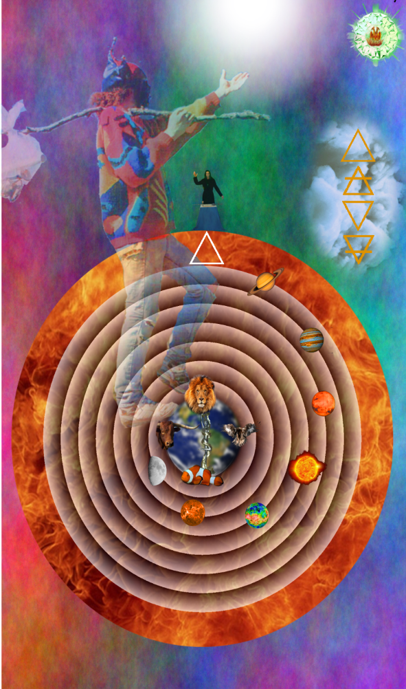
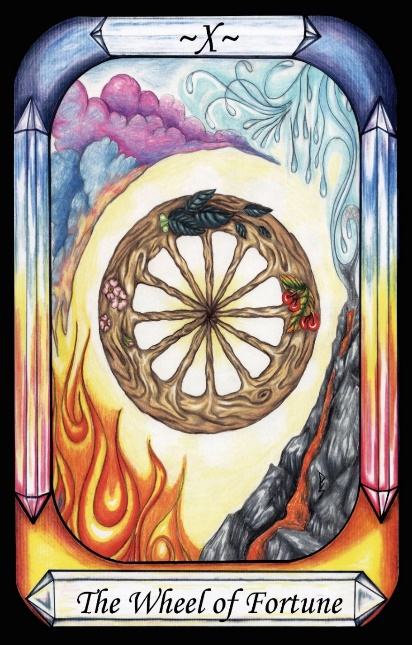
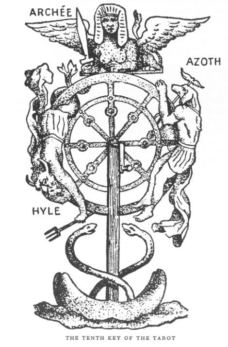
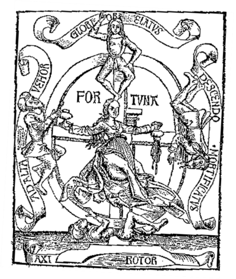

The Wheel of Fortune




Representation |
The Wheel of Fate |
Meaning |
Our fate is determined by the Governors above (Astrology) |
Opposite card |
The World |
Function |
Narrative (Identifies Fortuna - Fate) |
The Wheel of Fortune is Fortuna (Fate), which is controlled by the orbiting of the seven Governors in their (nearly) circular orbits.
[P14] Its work done, the Word left the domain of Nature, and ascended to be with the Demiurge. This left the elements of Nature without mind or reason, only Matter.
[P15] The Demiurge, Mind, and Word combined with the workmanship of Nature, and the Demiurge contained the Governors and his workmanship, and set them to move in circles [The Wheel of Fate], so that they have neither beginning nor end.
It represents the same as the World, in that those trapped in materialism suffer ill fortune, and without hope of redemption, trapped for another incarnation, as the left-hand side of the Wheel sinks from the heights to the darkness.
RWS Imagery
In the centre of the card is a circular disk, showing eight radial spokes, and having symbols upon it. At the top sits what may be an Archon ( see Gnostic mythology), but with the head of a sphinx, with a sword. At the left a serpent descends. At the right a human with a dog’s head ascends. The background features clouds, and in the four corners are angelic creatures with wings reading books. The books in the four corners of the card refer to the Word, by metaphor of the written word, as mentioned in [P14]. The four angelic creatures in the corners represent the divine form of the elements as they issued forth from the cloud in
[P6] Then issues forth the Word of God. The Word descends from the light to the moisture (waters), and Fire is born from the female principle. The Fire flies upwards [Wands]. Air too rises from it [Ace of Swords], up to hang just below the Fire, leaving Earth and Water below
Pymander Interpretation
The Wheel refers to the circling of the seven Governors, but has been disguised as the four elements, because the Demiurge made the Governors from the four elements. These determine the fortune or fate of the world.
Interpretation of RWS Imagery
The Imagery strongly reflects the imagery of the Wheel of Fortune which was a common motif, depicting Fortuna controlling the fortunes of mortals by turning the Wheel, and emphasizing the four elements. The symbols on the four Cardinal points of the Wheel are a little difficult to discern as they each have a line through the centre, but are basically alchemical symbols for Mercury (spirit), Sulphur (soul), Water and perhaps Sun(Fire). However, most of this is a distraction, and obfuscation, as the important point is the rotation of the seven Governors. The snake, Horus and Sphynx are more traditional, and representative of the rise and fall of people under fate.
In modern times, fortune is considered to be more an aspect of luck, to do with wealth, but in Renaissance times, the concept of fortune was more like that of fate, and Fortuna was a Goddess of Fate. Therefore, the Pymander interpretation of the Wheel focusses more on the circling of the Governors (planets), as a mechanism for the control of Fate via astrology.
Discussion
Two versions of images for the Wheel of Fortune concept are provided here, so as to offer connection back to the Waite card for readers.

Figure 13 - Eliphas Levi's Wheel of Fortune
Here is the Wheel of fortune image given to us by Eliphas Levi. At the top we see a winged, breasted lioness with a sword, and the title Archee. This is the traditional imagery for an Archon, as per the Gnostic creation myth. This is reinforced by the descending demon or serpent on the left of the world. Levi labels this Hyle.
The word hyle, a Greek term for wood or forest; hence, in the philosophy of Aristotle, the term is used for solid material – the physical world – Earth – primordial matter – chaos. It can be seen as the Descent of man into material form.
On the right is the dog-headed Anubis, keeper of the gates of Death, and usher of the spirit in the underworld. He is labelled Azoth, which indicates the spirit of Mercury. Azoth represents the rise of the Spirit, as indicated by the Fool in the Pymander Tarot.
The serpents of course refer to the Caduceus of Hermes, and so are a clue to the hermetic nature of the diagram, and to polarities, such as rising and falling fortune.
Levi’s Wheel has seven spokes, representing the seven Governors that govern the fate of mortals.

Figure 14 - The Wheel of Fortune from Gregor Reisch, Margarite Philosophica (1503)
The Wheel of Fortune is a diagram used frequently in Renaissance days, independently of the Tarot. It is used to represent the rise of the downtrodden, and the fall of the powerful. The four elements were typically arranged as follows.
Its message is that good and bad fortune come to all, in due time, and that those who currently experience good fortune should not consider themselves “better” than those who are currently experiencing bad fortune.
Even the movie Mad Max Thunderdome had a Wheel for deciding punishments. “Bust a deal, face the Wheel”